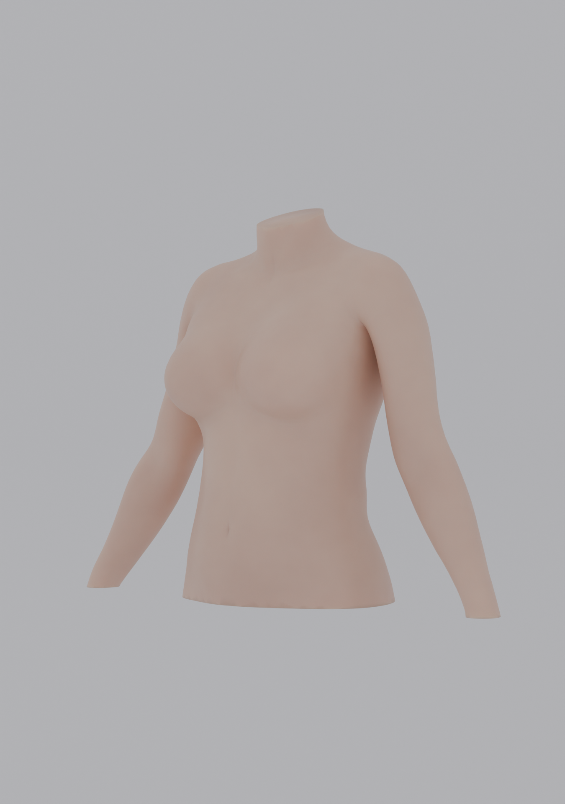

Avatar
preview
DRAFT · NO MEASUREMENT RECORD
⌁
◐

Loading draft GLB
Preparing viewer…
Interactive GLB could not load
A static draft view is shown. Serve this folder through localhost and retry.
Drag to orbit · wheel/pinch to zoom · use view presets
avatar_master.glb · loading
Shape contract
Front
45°
Side
Back
Reset